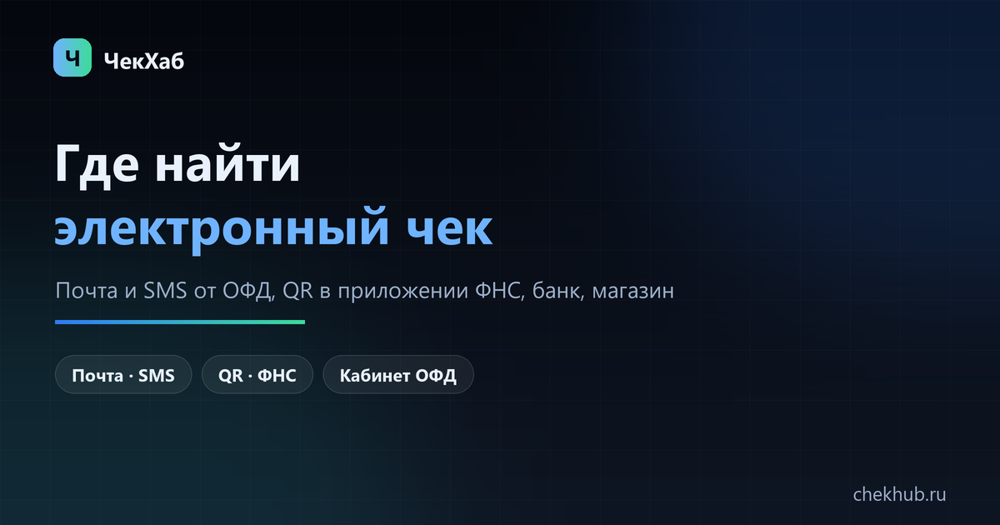

Где найти электронный чек: почта, QR-код, кабинет ОФД и приложение ФНС
Электронный чек приходит туда, куда его отправил продавец: на почту или телефон через оператора фискальных данных. Если письма нет, чек ищут по QR-коду в приложении ФНС «Проверка чека», смотрят в приложении банка и в крайнем случае просят копию у магазина. Ниже — что делать в каждом из этих случаев и почему личный кабинет ОФД покупателю ничего не даст.

QR-код на чеке — это ссылка на проверку в базе ФНС. По нему видно, пробит ли чек и совпадают ли сумма с той, что вы заплатили.
Если разбираться некогда
от 1 500 ₽ за кассу за месяц; год и сеть считаем по количеству касс и месяцев. Срок 1–3 рабочих дня на небольшую сеть.
Гарантия: если ваш ОФД не отдаёт данные за нужный период — вернём предоплату.
Как выглядит результат: пример файла выгрузки (CSV, данные тестовые).
Коротко: где искать электронный чек
Электронный чек — это тот же фискальный документ, только приходит он не на бумаге, а ссылкой или файлом. Юридически он равнозначен бумажному: подходит для возврата товара, гарантии, авансового отчёта и подтверждения расходов. По 54-ФЗ продавец обязан выдать чек, а если покупатель дал телефон или e-mail — отправить его в электронном виде; в этом случае печатать бумажный чек не обязательно (если покупатель не попросил).
Искать чек стоит по четырём направлениям, от самого быстрого к самому долгому:
- Почта или SMS — письмо от оператора фискальных данных, который обслуживает кассу магазина. Именно туда уходит копия чека, а не в «личный кабинет покупателя».
- Приложение ФНС «Проверка чека» — проверка по QR-коду с бумажного чека или ручной ввод реквизитов; умеет хранить чеки.
- Приложение банка — если платили картой, чек иногда виден в детализации операции.
- Сам магазин — продавец может отправить чек повторно или выдать копию.
1. Письмо или SMS от ОФД
Когда кассир вводит телефон или адрес почты, чек уходит продавцу в ОФД, а оператор отправляет покупателю сообщение со ссылкой на страницу чека или PDF-файл. Адрес отправителя обычно на домене оператора, а не магазина, поэтому письмо легко не узнать: в теме бывает просто «Электронный чек», номер заказа или сумма.
Если письма не видно, проверьте по порядку:
- папки «Спам», «Рассылки», «Промоакции» — фильтры почтовиков часто уводят такие письма;
- поиск по сумме покупки, дате, слову «чек» и ИНН магазина;
- тот ли ящик: чек мог уйти на другой адрес, указанный при оплате или в бонусной карте;
- срок жизни ссылки: у части операторов страница чека доступна ограниченное время, после чего нужен повторный запрос у продавца.
Если контактов вы не давали, письма не будет вообще — кассир не обязан спрашивать телефон, а бумажный чек при обычной покупке в рознице печатается по умолчанию.
2. Приложение ФНС «Проверка чека»
Это официальный способ проверить чек и заодно найти его, если бумаги под рукой нет. Работает офлайн по сохранённым чекам и онлайн — по запросу к базе налоговой.
- По QR-коду. QR на бумажном чеке содержит ссылку на проверку — приложение открывает её и показывает реквизиты документа.
- Вручную. Нужны дата и время покупки, сумма и номер фискального документа (ФД), а также ФПД — он печатается рядом с QR. Если знаете только сумму и дату, попробуйте проверить по ним: приложение подскажет, если совпадений несколько.
- Хранение. Найденный чек остаётся в приложении: удобно, когда бумага выцвела, а для возврата или отчёта нужны реквизиты.
Что означает ответ «чек не найден»: либо реквизиты введены с ошибкой, либо чек ещё не дошёл до оператора (передача идёт обычно за минуты, но по закону на это есть время), либо чек не пробили. Последнее — нарушение: обращение подаётся через сайт ФНС, и проверка обычно заканчивается штрафом для продавца.
3. Приложение банка
Если вы платили картой, в детализации операции у части банков есть кнопка «Чек» или «Электронный чек»: банк получает данные от ОФД и показывает их в истории. Работает не везде — зависит от банка, магазина и типа кассы. Это быстрый способ посмотреть сумму и наименования, но для возврата и отчётности надёжнее чек из приложения ФНС или письмо от оператора.
4. У продавца: повторная отправка и копия
Магазин видит все свои документы в кабинете ОФД — это реестр, где одна строка соответствует одному фискальному документу. Оттуда чек можно отправить повторно на почту или телефон, выгрузить файлом и распечатать копию. Обращение лучше формулировать точно: дата и время покупки, сумма, номер кассы или адрес точки, последние четыре цифры карты. По этим данным чек находится за минуту.
Почему нельзя «просто войти в кабинет ОФД» как покупатель
Самый частый тупик: человек ищет личный кабинет оператора, чтобы найти свой чек, и не находит там ничего своего. Причина в том, что кабинет ОФД привязан к договору владельца кассы — к ИНН организации, номеру ККТ и фискальному накопителю. Отдельного «кабинета покупателя» у операторов нет: реестр чеков принадлежит продавцу, а покупателю доступно только то, что продавец отправил ему по 54-ФЗ.
Поэтому порядок такой: покупатель ищет чек в почте, SMS или приложении ФНС, а если нужна копия — просит магазин. Магазин, наоборот, ищет чек в кабинете ОФД и оттуда выгружает реестр. Если вы работаете на стороне бизнеса, кабинет оператора — главный инструмент: там видны касса, смены, признак расчёта и позиции. Адреса кабинетов пяти операторов собраны на странице «Личный кабинет ОФД».
Чек не пришёл: что делать по шагам
- Проверьте спам и поиск по сумме. Половина «пропавших» чеков находится именно там.
- Уточните контакты. Кассир мог записать почту или телефон с ошибкой — попросите проверить в заказе.
- Попросите отправить повторно. Это обязанность продавца: документ у него есть в кабинете ОФД.
- Проверьте чек по реквизитам в приложении ФНС. Если документ там есть, значит он пробит и дело только в доставке.
- Если чека нет и в ФНС — его не пробили. Обращение в налоговую через сайт: приложите дату, сумму, адрес точки и, если есть, фото. Магазину это грозит штрафом, поэтому вопрос обычно решается быстро.
- Не затягивайте. Оператор хранит фискальные документы не менее пяти лет, но кабинеты и ссылки в письмах могут быть доступны меньше. Реестр за нужный период лучше сохранить себе сразу.
Зачем электронный чек покупателю и магазину
Покупателю: возврат и гарантия, подтверждение расходов для налогового вычета (лечение, обучение, фитнес), замена выцветшей бумаги, доказательство покупки, если магазин спорит. Электронный чек с QR принимают наравне с бумажным.
Бизнесу: сверка выручки с банком, авансовые отчёты сотрудников, перенос данных в 1С и Excel, проверка возвратов и коррекций. Реестр чеков за период собирается в кабинете ОФД, но не одним файлом за год: кабинеты ограничивают период и число строк, поэтому данные берут по месяцам или кварталам и склеивают по ключу ФН + ФД + ФПД. Подробности — в статьях о выгрузке за год и о выгрузке с позициями.
Если разбираться с кабинетами и выгрузками нет времени, реестр чеков за нужный период собирают под ключ: см. услугу выгрузки — файл Excel или CSV с реквизитами и позициями, без дублей и с расшифровкой признаков расчёта.
Частые вопросы
Куда приходит электронный чек, если я оплатил картой?
На телефон или e-mail, которые вы назвали при оплате: продавец передаёт чек оператору фискальных данных, и тот отправляет покупателю ссылку или PDF. Дополнительно чек бывает виден в приложении банка, если банк получает данные от ОФД.
Можно ли получить чек, если я не давал ни почту, ни телефон?
Только через продавца: попросите отправить чек повторно или выдать копию по дате, сумме и номеру кассы. Если известны реквизиты (дата, сумма, номер ФД), чек можно попробовать найти в приложении ФНС «Проверка чека».
Электронный чек заменяет бумажный?
Да. По 54-ФЗ электронный чек равнозначен бумажному: его принимают при возврате, для гарантии, авансового отчёта и подтверждения расходов.
Можно ли войти в кабинет ОФД как покупатель и найти свой чек?
Нет. Кабинет оператора привязан к договору владельца кассы — ИНН, номеру ККТ и фискальному накопителю. Реестр чеков принадлежит продавцу, покупателю доступно только то, что продавец отправил ему по 54-ФЗ.
Сколько хранится электронный чек?
Оператор фискальных данных хранит документы не менее пяти лет, в приложении ФНС чек остаётся, пока вы его не удалите. Ссылки в письмах и глубина доступа в кабинетах могут быть меньше — важные чеки сохраняйте себе.
Чек не бьётся по QR-коду — что это значит?
Либо QR повреждён и реквизиты нужно ввести вручную, либо чек не пробит. Проверьте чек по данным чека в приложении ФНС: если документа нет в базе, обращайтесь с жалобой через сайт налоговой.
Как магазину выгрузить все чеки за период?
Реестр собирается в кабинете ОФД по шагам: период, касса, тип документа, признак расчёта — затем выгрузка в CSV или Excel. Год одним файлом кабинеты обычно не отдают: данные берут по месяцам и склеивают по ключу ФН + ФД + ФПД.